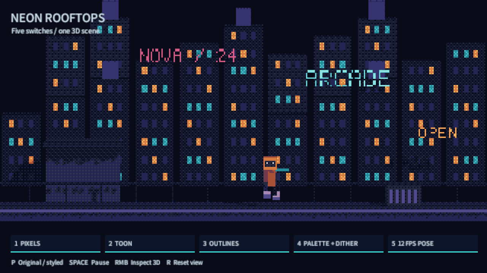
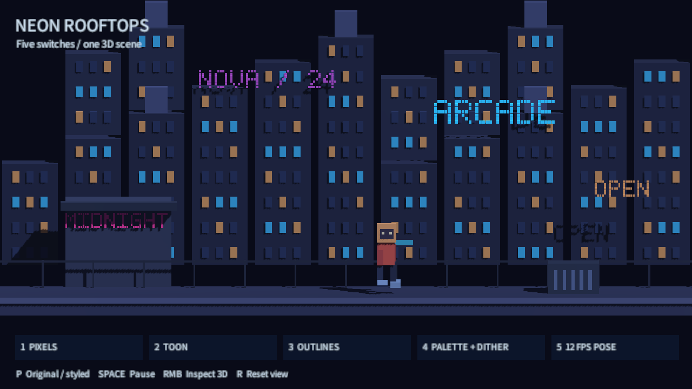
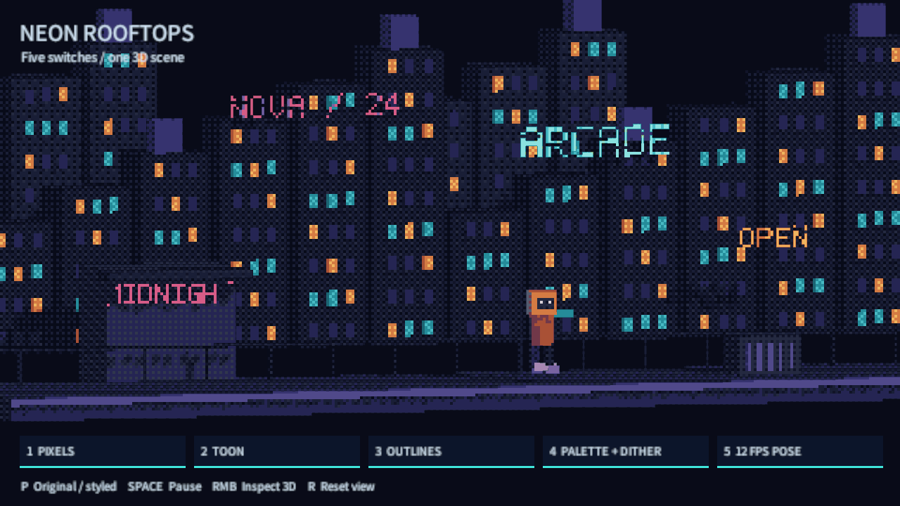
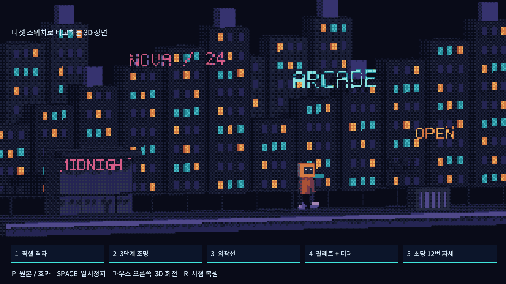

Tracefolio REPORTS & ISSUES
Tracefolio REPORTS & ISSUESPixel Camera — 네온 옥상 러너 새 예제
완료기존 예제를 보존하고 새로운3D 야간 도심·러너·다섯 효과 비교·9개 언어 안내를 저장했습니다.
작업 결과
05-NeonRooftops.unity를 기존 Samples에 추가했습니다. 건물·네온 타일·러너·재질·Animator 클립·UI는 모두 편집 가능한 원본입니다.
변경 내용
적용 내용
1~5는 격자·3단계 조명·외곽선·32색 OKLab/Bayer4·12FPS 자세입니다. P 전체 비교, Space 일시정지, 오른쪽 드래그3D 회전, R 시점 복원입니다. UI 생성·폰트 덮어쓰기는 없습니다.
flowchart LR
A[프레임 입력] --> B{일시정지}
B -->|아니오| C[루트 이동]
A --> D[카메라 회전·복원]
flowchart LR A[키 또는 버튼] --> B[개인 프리셋] B --> C[격자·윤곽선·팔레트] B --> D[재질·12FPS·상태 표시]
using UnityEngine;
namespace TurnRoom.PixelCamera.Samples
{
/// <summary>
/// 저장된 네온 옥상 예제에서 다섯 렌더 효과와 연속 이동을 비교한다.
/// </summary>
public sealed class FiveSwitchShowcase : MonoBehaviour
{
public PixelCameraEffect effect;
public PixelCameraPreset preset;
public PixelCameraPalette palette;
public Renderer[] surfaces;
public Material[] smoothMaterials;
public Material[] toonMaterials;
public Transform runner;
public PixelCameraSteppedAnimator steppedAnimator;
public bool[] switches = { true, true, true, true, true };
public GameObject[] enabledIndicators;
public PixelCameraObject[] pixelObjects;
public GameObject[] languageGuides;
private PixelCameraPreset _working;
private Vector3 _runnerHome;
private Vector3 _cameraHome;
private Quaternion _cameraRotation;
private float _time;
private bool _paused;
private void Awake()
{
_runnerHome = runner.localPosition;
_cameraHome = effect.transform.position;
_cameraRotation = effect.transform.rotation;
_working = Instantiate(preset);
effect.preset = _working;
ApplySwitches();
}
private void Update()
{
for (int i = 0; i < 5; i++)
{
if (Input.GetKeyDown((KeyCode)((int)KeyCode.Alpha1 + i)))
{
ToggleSwitch(i);
}
}
if (Input.GetKeyDown(KeyCode.P))
{
bool enabled = !switches[0];
for (int i = 0; i < 5; i++)
{
switches[i] = enabled;
}
ApplySwitches();
}
if (Input.GetKeyDown(KeyCode.Space))
{
_paused = !_paused;
steppedAnimator.GetComponent<Animator>().speed = _paused ? 0 : 1;
}
if (!_paused)
{
_time += Time.deltaTime;
runner.localPosition = _runnerHome + Vector3.right * Mathf.Sin(_time * .35f) * 3;
}
if (Input.GetMouseButton(1))
{
effect.transform.RotateAround(new Vector3(0, 3, 3), Vector3.up, Input.GetAxis("Mouse X") * 2);
}
if (Input.GetKeyDown(KeyCode.R))
{
effect.transform.SetPositionAndRotation(_cameraHome, _cameraRotation);
}
}
private void OnDestroy()
{
if (_working != null)
{
Destroy(_working);
}
}
/// <summary>
/// 키보드와 저장된 버튼 이벤트에서 지정한 비교 기능을 전환한다.
/// </summary>
public void ToggleSwitch(int index)
{
if (index < 0 || index >= switches.Length)
{
return;
}
switches[index] = !switches[index];
ApplySwitches();
}
/// <summary>
/// 장면 자산을 보존하며 개인 프리셋과 렌더러의 비교 상태를 적용한다.
/// </summary>
public void ApplySwitches()
{
PixelCameraPreset settings = _working != null ? _working : preset;
effect.enabled = switches[0] || switches[2] || switches[3];
for (int i = 0; i < pixelObjects.Length; i++)
{
pixelObjects[i].pixelSize = switches[0] ? 4 : 1;
}
settings.outline = switches[2];
settings.palette = switches[3] ? palette : null;
settings.orderedDithering = switches[3];
steppedAnimator.enabled = switches[4];
for (int i = 0; i < surfaces.Length; i++)
{
surfaces[i].sharedMaterial = switches[1] ? toonMaterials[i] : smoothMaterials[i];
}
for (int i = 0; i < enabledIndicators.Length; i++)
{
enabledIndicators[i].SetActive(switches[i % 5]);
}
}
}
}
검증
저장 씬을 다시 열어 Built-in/DX11/Linear로 실제 Play했습니다.1.6916초 동안14,233회 루트 이동 관찰과20회 자세 변화. 에디터 콜백 수이며 GPU FPS 수치가 아닙니다. 원본 프리셋 보존 확인. 실행.




새 장면이라 변경 전은 없습니다. Garden 재배치 없이 영상과 비슷한 야간 도심·보행로·러너를 독립 기하·재질로 작성했습니다. Overlay UI는 Unity 카메라로 효과 밖에 렌더했습니다. 대화.
남은 사항
새 예제의 URP 변환, 실제 키보드·마우스 조작, 공유 언어 변경의 네이티브 왕복과 나머지7개 언어 배치는 미확인입니다. 플레이어는 영어 기본이며 편집기에서는 저장된9개 안내 그룹을 공유 언어에 연결했습니다. 눈은 크게 모델링했으며 셀 미만 디테일 자동 복원은 아닙니다.
작업 시간
- 제안 시간: 최초40
70분, 새 예제 추가 후5585분. - 실제로 완료된 시간: 2026-11-16 13:00:04 KST 시작. 구현·실행·새 설치·초안 저장까지46분37초,13:46:41 KST 완료. 공개 보고·푸시는 별도입니다.
- XERJ: 미사용 — 사용자 지시에 따라 rg와 실제 자막·소스·Unity 로그·렌더·Publisher 재읽기를 사용했습니다.